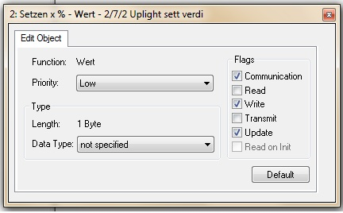

|
This page last changed on Jun 22, 2012 by toffe.
Hello,
Im pretty new to OpenRemote and have stumbled across some problems.
I have a knx system and I can dim my lights up and down but the sensor does not ssem to work.
When I add a label on the sensor it only shows the initial dimvalue and deos not change when I dim the lights.
The strange thing here is that when I read the status sensor from ETS the value on OpenRemote changes correctly.
I have tried to put both the status and value part of the knx switch in same group but with same result.
Another thing I noticed is that on bus monitor it looks like it comes from one of the inactive devices. Can I change the KNX comm address of the server?
Hints?
Reading Value (Sensor)
Writing Value

|
Your dim actuator has to send the new value after a change occured. This is a configuration from your dim actuator settings.

Posted by mredeker at Jun 23, 2012 08:10
|
|
I looked at the settings and there is no spesific setting to tell that the dimactor should send its new value.
When I configured the on/off part of the dimmer to transmit its status it clearly show in the bus monitor when a change occurs.
Can OpenRemote request this value?
Posted by toffe at Jun 23, 2012 12:30
|
|
The dimmer should have a setting to transfer on/of status after a change and also dim value.
OpenRemote does not request this (only once during start).
Which dimm actuator do you use?
Posted by mredeker at Jun 23, 2012 19:10
|
|
Hi, the dimactor im using is from moeller.
http://www.moeller.net/en/products_solutions/power_distribution/buildings/xcomfort/eib/mini_eib/mini_outline2.jsp
Posted by toffe at Jun 24, 2012 11:10
|
|
That is quite an old device 
Since the device does not send it's status (on/off or dim value) after a change, it cannot be used with out current implementation.
OpenRemote expects KNX to inform about any status changes.
Posted by mredeker at Jun 24, 2012 20:44
|
|
OK, I suspected something like that.
The strange thing is that it sends its on/off value but not the dim value.
Any possibility that a query function will be added to a future release?
What is the best way to have the groups in ETS. Status and set value in same or separate groups?
Posted by toffe at Jun 25, 2012 08:27
|
|
From reading the application documentation of that dimmer it does not send the on/off value either.
Do you use the same group address for sending on/off and status? This could cause this behaviour.
You could try doing the same with the dim value.
The best way is to use seperate group addresses for writing a value and reading/receiving a value.
I don't know if the polling will be supported in a future release.
Posted by mredeker at Jun 25, 2012 10:05
|
|
Hello,
The dimming and the on/off functions are set up differently - on/off and status are the same function on the actuator.
Are there anyway to "force" the dim status to report its status?
What are the correct setting of the checkmarks in ETS?
Look at the attached picture to see what I mean.

Posted by toffe at Jun 25, 2012 13:00
|
|
Sorry, with this device you will be out of luck.
Currently OpenRemote does not support periodical status queries, neither do we support status and action on the same group address.
Posted by mredeker at Jun 26, 2012 10:30
|
|
{kind=link}
{kind=link}